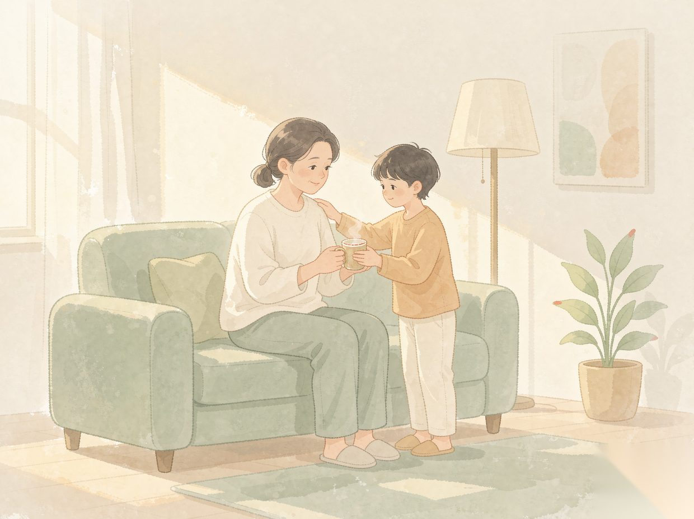

香九龄，能温席
前面我们说，年少的时候要修习人伦、亲近师友、学习礼仪。这一句，举一个少年作例子。
黄香是东汉时期的孩子。他很小的时候，母亲就早早离世。家里清贫朴素，没有富足的衣食，也没有仆人帮忙，只有他和父亲两个人相依为命。
父亲是一位忠厚、正直、辛苦读书、勤恳养家的人。日子简朴、安静，也清苦。
小小黄香，比同龄孩子更懂事。他看着父亲：白天辛苦劳作、读书治学；傍晚回家还要收拾家事、打理清贫的家；夜深了，还要灯下读书、劳心劳神。
九岁的黄香，心里非常疼惜父亲。
古时候没有暖气、没有电热毯、没有柔软的棉被。秋冬的夜晚，寒风穿窗，竹席冰冷。大人劳累一天，一躺进冰冷的床席，整夜都睡不暖、睡不安稳。

于是每到寒夜，父亲还未入寝，黄香就先脱掉外衣，小小身子躺进冰冷的席子上。他用自己单薄小小的体温，一点一点捂热凉席、暖透被褥。
席子从刺骨冰凉，慢慢变得温和柔软。等到床席、被窝都暖热了，他再轻轻请劳累一天的父亲上床安睡。
不是被大人要求的，也不是为了被夸奖。家里没人教他做这件事，也没有人逼迫他。是他自己看见辛苦、自己心生疼惜、自己愿意分担。
夏天酷暑之时，他也同样体贴：夜里闷热蚊虫多，他先为父亲扇凉枕席、赶走蚊虫，让父亲得以安歇。

黄香的孝，从来不做给外人看。他家清贫、无人瞩目、无人称赞，这份温柔全部藏在深夜、藏在日常、藏在无人看见的小事里。
这就是「温席」真正的样子：不是表演，不是规矩，不是任务。是一个孩子，心里装着别人、懂得体恤辛苦的纯真善良。
我们今天不需要「以身温席」。但可以继承黄香的本心：看见家人累，就多一份体谅；看见家人忙，就多一份分担；不任性、不吵闹、不事事以自己为中心。
古人的行为会过时，但体恤他人、心怀温柔的本心，永远不会过时。
刻意做出孝的样子，只完成特定仪式；平时漠然，无人看见时便不放在心上。
心中感念，看见长辈辛劳，自然愿意分担；不为人见，依然温柔待人，长久留心关照。
- 真正的懂事，不是听话，是心里看得见别人的辛苦。
- 最珍贵的善良，是无人看见时，依然愿意温柔待人。
- 孝不看形式、不看大小，只看真心。
- 年少的体谅，是一个人「知义、成人」的开始。
这一课最容易被用成一句比较。三条提示，护住孩子的心。
一、不拿故事做道德绑架。不要说「黄香九岁就能温席，你怎么不会」——故事是示范，不是考核标准，更不该制造愧疚。
二、区分体恤与无底线顺从。体恤是共情、是分担；不等于放弃自我想法，一味听从。
三、看见根源。黄香之所以能做到，不是「被管教」，而是清贫安稳的家风、正直善良的父亲、稳定温柔的教养，让孩子长出了共情与柔软。父有慈、有勤、有正，子才有敬、有惜、有孝。
接上选择力练习：体恤是底色，孩子可以自主选择表达关心的方式，不强求统一的行为模板。
香九龄，能温席
一 · 字义与句读龄，年也；席，卧席。全句：黄香年方九岁，便能体恤亲长，有温席侍亲之行。
《东观汉记》《后汉书》并有黄香传：字文强，江夏安陆人，少失母，事父至孝，冬月为父温席，暑则扇枕。由前面的义理纲领，转入古人事迹举例，以实例印证「为人子，方少时」的修习。
二 · 命题考辨勘误重点：后世常固化故事，执着于行为复刻，甚至用来苛责孩童。故事的载体是古，内核是共情体恤。器物与生活条件变迁，行为可以迭代；「心中存敬、体察他人苦辛」这个内核不变。
再厘清：黄香的孝，是情感的自然回馈，不是宗法之下的强制任务。孝是双向滋养，不是单向的付出与索取。
三点人格品质尤须点出：幼年失恃而不怨怼，逆境养出柔软心；家境清贫而能安贫，简朴养出知足心；无人督促而自发体恤，纯然本心，无人为之善。
三 · 中西对照《孝经》：「夫孝，始于事亲。」事亲之本在爱敬，不在仪节之繁。
发展心理学：共情能力在早期亲子互动中萌芽；关照他人，是良知的落地形态。
存在伦理学（列维纳斯一路）：看见他者的辛苦，是跳出自我中心的起点。
反向思辨：孝的叙事极易异化，变成长辈索取、压制晚辈的工具，需时刻警觉边界。
四 · 与前后课的张力承接第十五课「亲师友，习礼仪」：礼仪是通用交往之敬；孝亲，是敬最先生根的地方。
串联第十三课「人不学，不知义」：义最先在亲子之间实践。黄香不是天生就懂，也是在长期教化熏习中长出这份体察，呼应第四课「教之道，贵以专」——稳定的家庭教化，滋养这份善念。
收束一句：教有专，则性不乱；学有义，则行自善。性本善 → 需教化 → 教贵专 → 学知义 → 落地为人伦孝行。
一、如果父母并不能做到「养而有教」，这份体恤的孝，还要如何安放？
二、如何区分发自本心的关怀，与出于恐惧、讨好的顺从？
三、孝的表达有没有统一标准？是否只要心意真诚，形式可以不拘？